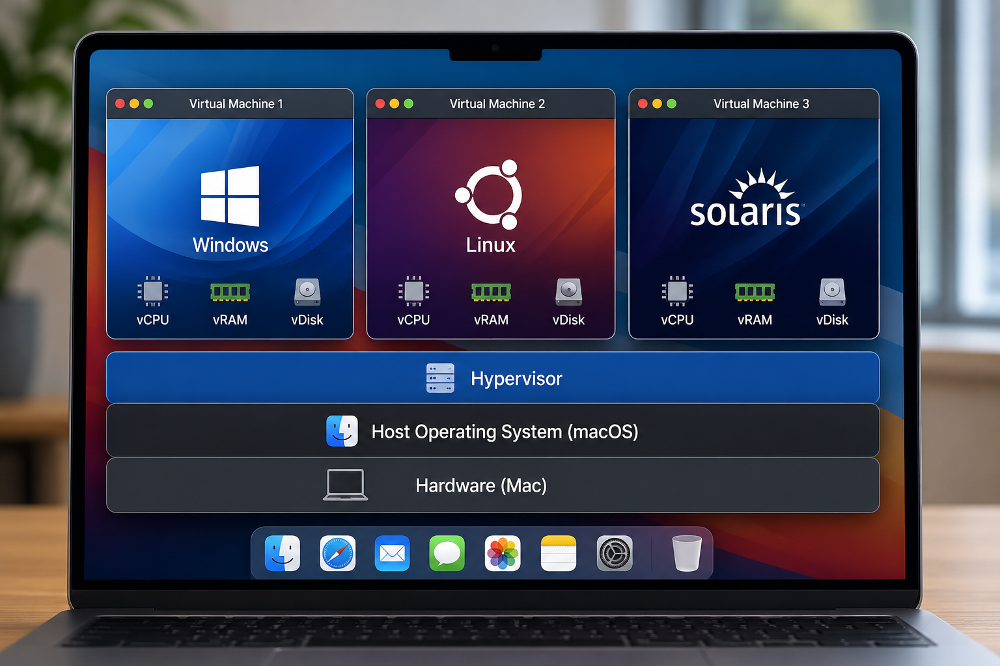

Further reading6.8 · Not required
Virtual machines
A virtual machine (VM) runs a guest operating system and guest kernel on virtualised hardware. This creates a more complete guest boundary than a language virtual environment or a container.

Common VM software
| Software | Where you commonly see it |
|---|---|
| VirtualBox | Cross-platform teaching, testing, and local guest operating systems |
| VMware Workstation / Fusion | Windows/Linux and macOS developer machines |
| Parallels Desktop | Running Windows or Linux guests on macOS |
| Hyper-V | Virtualisation built into supported Windows editions and Windows Server |
| QEMU, often with UTM on macOS | Virtualisation and architecture emulation |
When a VM is useful
- You need a guest kernel or a different supported operating system.
- You need a stronger boundary for testing untrusted or risky software.
- You need to preserve a legacy operating-system environment.
- You want a complete server-like guest that can be snapshotted and restored.
Costs and limitations
A VM normally needs more memory, disk space, startup time, and operating-system maintenance than a container. A VM boundary is stronger, but it is not a claim that hypervisors have no vulnerabilities.
How this relates to Docker DesktopLinux containers require a Linux kernel. Docker Desktop uses a managed Linux environment on macOS and Windows, then runs Linux containers inside it. You normally interact with Docker rather than managing that VM directly.